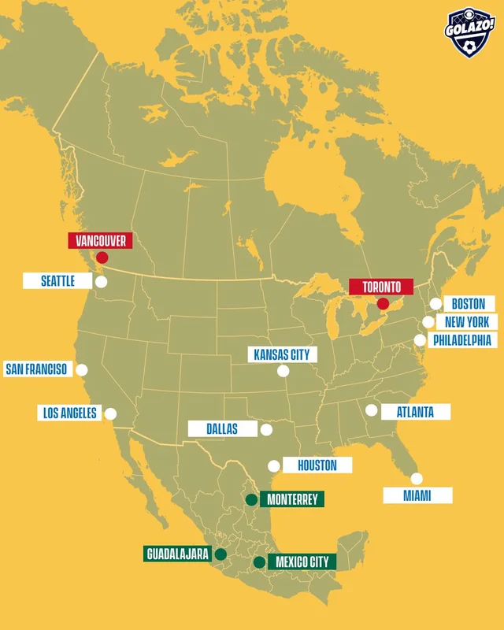
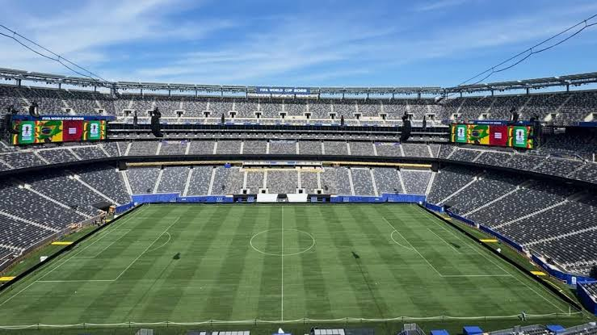

A Copa de 2026 foi disputada em 16 cidades de três países diferentes.
O país recebeu a maior parte dos jogos, em 11 cidades:
Todos os jogos a partir das quartas de final foram disputados nos Estados Unidos.
Voltar ao topoO Estádio Azteca, na Cidade do México, recebeu a partida de abertura em 11 de junho.
Voltar ao topo
A grande final foi disputada em 19 de julho de 2026, no MetLife Stadium, em East Rutherford, Nova Jersey.
Pela primeira vez na história, a final da Copa teve um show no intervalo.
Voltar ao topo